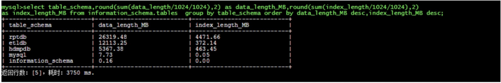

版本记录
| 需求人 | xx |
|---|---|
| 操作人 | xx |
| 审核人 | xx |
迁移需求
业务侧需求沟通记录
（填写需求描述，最好把业务侧的需求直接复制粘贴）
业务侧需求整理
（根据对需求的理解，填写表格）
| 需求 | 源端 | 目标端 |
|---|---|---|
| 实例id | xxx.mysql.rds.aliyuncs.com | xxx.mysql.rds.aliyuncs.com |
| 实例名称 | xx-dev | xx-prd |
| 数据库类型 | MySQL | MySQL |
| 数据库版本 | 5.6 | 5.6 |
| 库名 | xx xx | xx xx |
| 表名 | 所有表 | 所有表 |
| 结构 | √ | √ |
| 数据 | √ | √ |
| 迁移类型 | [√]数据迁移： [√]结构 [√]全量 [√]增量 []数据同步： []结构 []全量 |
DTS提供了数据迁移功能，类型选择：结构+全量+增量迁移。
DTS提供了数据同步功能，类型选择：结构+全量。
迁移明细
源数据库调研
| 实例id | xx |
|---|---|
| 实例名称 | xx |
执行以下SQL调研待迁移/同步的数据量：
select table_schema,round(sum(data_length/1024/1024),2) as |

运行结果截图保留。
目标数据库调研
| 实例id | xx |
|---|---|
| 实例名称 | xx |
- 控制台DMS登陆后确认目标库中是否已存在待迁移/同步的表，若存在需要删除；
- 与需求方确认目标侧待删除的表；
- 确认后清理，所有操作截图留档。
DTS同步/迁移任务明细
每一个步骤都需要截图留档
创建任务
配置任务
任务过程中的报错解决
任务成功
业务验证
资源监控和速率模板
任务监控
启动时间：
成功时间：
监控时间段： －
对源库的影响
| 监控时间 | 实例规格 | X 核 | XGB | xxxx | xxx | ||
|---|---|---|---|---|---|---|---|
| 监控指标 | CPU利用率 | 内存使用率 | IOPS使用量 | 当前活跃连接数 | 总连接数 | 网络流量 （输入/输出） | |
| 年-月-日 | 同步之前 | ||||||
| 同步5min | |||||||
| 同步10min | |||||||
| 同步结束后 |
任务速度
| 源库规格 | 公有云 VPC 华东1可用区E 8核\64G mysql5.5 |
|---|---|
| 目标库规格 | 公有云 VPC 华东1可用区B VPC 8核/32G/1000G/12000 IOPS |
| 数据量 | xxG |
| DTS规格 | Large/Small/xxx |
| 迁移时间 | （后期完善） |
| 迁移速度 | （后期完善） |
| 源库IOPS变化 | （后期完善） |
| 源库CPU变化 | （后期完善） |